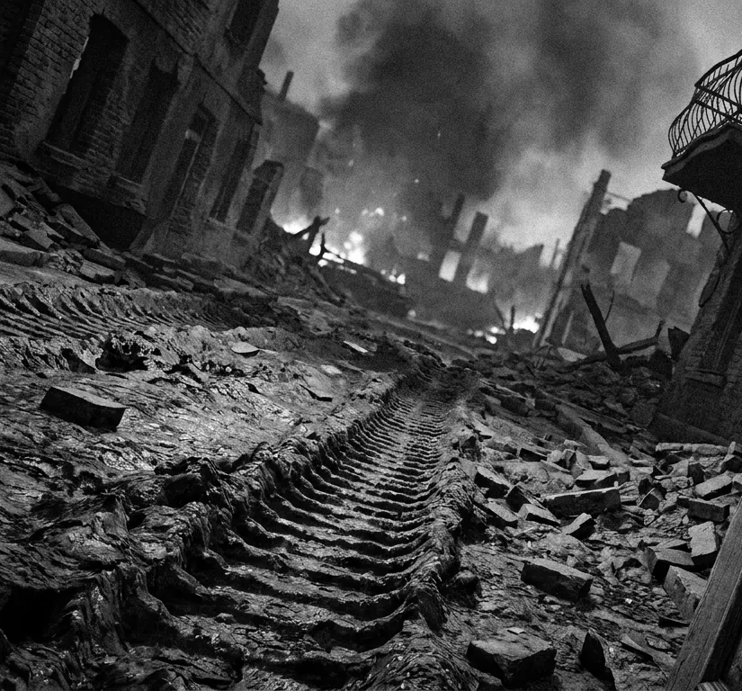
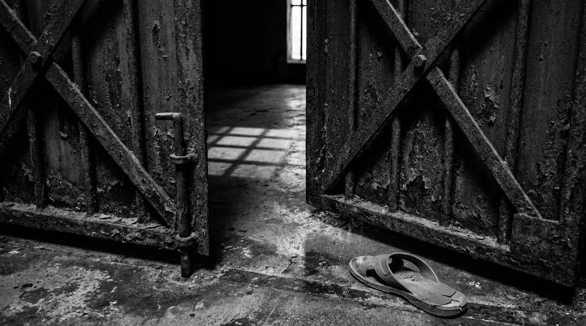

- ليست أخطر لحظات الثورات تلك التي تواجه فيها الرصاص،
- ولا تلك التي تقف فيها على أبواب السجون،
- ولا حتى تلك التي يسقط فيها النظام الذي حكم البلاد لعقود.
أخطر لحظاتها تأتي بعد الانتصار، حين يفتح الناس أبواب الأمل على اتساعها، ثم يطالبون من خرجوا من تحت الركام بأن يحققوا لهم، في صباح واحد، كل ما حُرموا منه طوال نصف قرن.
في تلك اللحظة تحديداً، قد تبدأ الثورة بخسارة جمهورها، لا لأنها خانت أحلامه، بل لأنه لم يمنحها الوقت الكافي كي تحوّل تلك الأحلام إلى واقع.
المفارقة
وهنا تكمن إحدى أكثر المفارقات إيلاماً في تاريخ الثورات العربية: قد يقضي الناس عقوداً تحت حكم الفساد،
- يتعايشون مع الظلم،
- يتأقلمون مع الطوابير،
- ويتعلمون كيف ينجزون معاملاتهم بالواسطة،
- وكيف يحمون أنفسهم بالصمت،
ثم ما إن يسقط النظام حتى يستيقظ في داخلهم مواطن آخر، يطالب بدولة مثالية، فورية، كاملة، لا تشبه شيئاً من الدولة التي ورثها الثائرون.
الأبواب والملفات
وكان المشهد الذي تكرّر في دول الثورات مألوفاً: أبواب المؤسسات التي اعتاد الناس أن يدخلوا إليها بأمل ضئيل، امتلأت فجأة بأصحاب المطالب والملفات القديمة.
- قضايا مؤجلة،
- ومظالم متراكمة،
- وحقوق لم تُسترد،
- ومعاملات بقيت سنوات حبيسة الأدراج.
صار المطلوب من السلطة الجديدة أن تحلّ كل ذلك، وأن تفعل ذلك فوراً، وكأن سقوط الحاكم أسقط معه كل أسباب الفشل.
اليوم
اليوم، في سوريا، أخشى أن نعيد مشهد تلك الدول بأيدينا.
ما إن تظهر مشكلة في الخبز أو الكهرباء أو الأسعار، حتى ترتفع الأصوات وكأن سوريا لم تخرج من خمسين عاماً من الاستبداد، وكأن الدولة التي ورثناها كانت سويسرا، وكأن المطلوب من الذين حرروا البلاد أن يحوّلوها إلى جنة خلال أشهر، وإلا فهم فاشلون لا يستحقون إتمام الفرصة.
الشريطان بمقياس واحد: كل شهر بقدر الآخر.

الثورة المضادة
لا تنسوا أن فلول النظام لا يحتاجون إلى أن يحبهم السوريون مجدداً، يكفيهم أن يكره السوريون واقعهم إلى الحد الذي يجعلهم ينسون لماذا ثاروا أصلاً.
لا يحتاج أعداء الثورة إلى أن يقنعوكم بأن بشار الأسد كان جيداً، يكفي أن يقنعوكم بأن من جاء بعده أسوأ، وأن الحرية لم تستحق ثمنها، وأن العودة إلى القبضة الحديدية أقل كلفة من الصبر على بناء الدولة.
وحين يصلون إلى هذه النقطة، تكون الثورة المضادة قد قطعت نصف الطريق، حتى لو لم تتحرك دبابة واحدة.
يا سوريين، نحن لسنا في سويسرا، ولن نصبحها غداً.
نحن بلد خرج لتوّه من تحت أنقاض دولة حوّلت
- الوطن إلى مزرعة،
- والمواطن إلى رعية،
- والقانون إلى أداة بيد الحاكم.
ما أخشاه
أخشى أن نستيقظ ذات يوم فنكتشف أننا لم نهزم الثورة المضادة، بل مهّدنا لها الطريق، ورفعنا بأيدينا لافتات تطالب بعودتها، لأننا استعجلنا الحصاد قبل أن تنضج البذور.
عندها لن ينفعنا الندم، ولن يعيد إلينا أحد السنوات التي أضعناها، ولا الأحبة الذين فقدناهم، ولا الحرية التي دفعنا دماءنا ثمناً لها.
لا تكونوا شركاء في الانقلاب على ثورتكم، حتى لو أقنعوكم أنكم تفعلون ذلك من أجل إنقاذها.
- فليس كل من يرفع صوته غاضباً يريد إنقاذ سوريا،
- وليس كل من يعدكم باستعادة الاستقرار يريد لكم دولة،
- وليس كل من يستثمر في أخطائنا يريد إصلاحها.

بعضهم لا ينتظر إلا أن نفتح له الباب.
فلا تفتحوه بأيديكم… ثم تسألوا: كيف عاد الطاغية؟